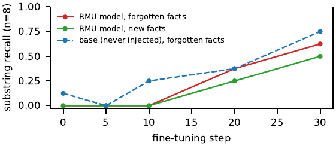
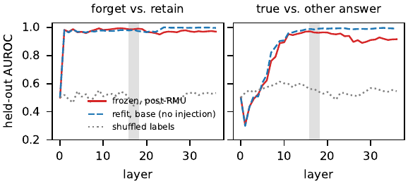

In plain language
Hiding an answer is not the same as deleting it
When a model is made to “unlearn” something, we usually check by asking it directly. If it stops answering, the knowledge looks gone. But a model can stop saying a fact while still holding it. That difference matters for privacy, copyright and hazardous-knowledge removal, because a deployer who only checks direct prompts gets false assurance.
We taught a small multilingual model, Tiny Aya, 40 made-up facts about fictitious authors, then applied RMU, a method that perturbs the model’s internal activations on those facts. Asked directly, the model stopped revealing the facts. We then pushed harder with paraphrases, format changes, extraction prompts, eight languages, held-out probes, a logit lens and a short relearning test.
The result is output-level suppression, not proof of erasure. After 30 fine-tuning steps the RMU model recovers 5, 7 and 7 of 8 forgotten facts across three seeds, against 4, 4 and 6 of 8 new facts, a gap of one to three facts that is too small to call significant. Along the way we found that standard RMU did nothing on Tiny Aya until the forget loss was masked, and that the same settings barely worked on the Base model and only partly on Aya Expanse 8B, so we claim no cross-model generality.
Key results
What the audit found
Judge forget suppression is the fraction of injected facts that a model’s output does not reveal. Higher means more hidden. Global figures are the mean of seeds 42 to 44.
- Direct questions
- 0.03 to 0.92Judge forget suppression on Tiny Aya Global (mean of three seeds), up from 0.03 before RMU.
- Extraction prompts
- 0.08 to 0.95Judge forget suppression on Global, up from 0.08 before RMU.
- Retained facts
- 0.49 to 0.44Judged retain accuracy on Global, down from 0.49. The cost across variants is 1.6 to 9.4 points.
- Logit lens, output token
- 0.971 to 0.696Probability of the correct first content token (Global seed 42, n=40), down from 0.971. Lowered, not removed.
Suppression by question format
Global, mean of seeds 42 to 44, judge forget suppression.
Direct suppression after RMU, by model
The same settings on each model. Orange bars worked; dark bars did not.
We do not claim erasure. Held-out probes separate forget from retain questions at AUROC 0.92 to 1.00 from layer 1 up, but a never-injected base model does as well, so they reflect surface differences, not stored knowledge. On Base, a prompt-format fix let injection pass, but the same settings moved direct suppression only from 0.00 to 0.10. Format changes leak: the pooled cloze and true/false bucket reaches only 0.79. Small samples and three Global seeds limit every conclusion, and the translations have not been checked by a native speaker.
What we asked
Three research questions
RQ1
How complete is behavioral forgetting under direct, paraphrased, reformatted, extraction-style and translated questions, and what does it cost on retained knowledge?
RQ2
Is the knowledge still recoverable? Do held-out probes, a logit-lens readout of the answer token, or relearning give evidence of residual knowledge?
RQ3
Do the answers differ across Tiny Aya variants, RMU settings and one larger model?
Figures
From the paper


Explore everything
Every artifact, one click away
The paper, the slides, the code, and every Hugging Face artifact. The model checkpoints are CC-BY-NC-4.0 because they derive from Tiny Aya.
Unlearned checkpoints (Hugging Face, CC-BY-NC-4.0)
Video
Watch the walkthrough
Cite
BibTeX
@misc{obrien2026unlearninghiding,
title = {Unlearning vs. Hiding: Does Unlearning Remove Knowledge or Just Suppress Its Expression?},
author = {O'Brien, Mackenzie},
year = {2026},
note = {Lexsi AI Safety and Alignment Hackathon, Track 2b (problem statement 7)},
howpublished = {\url{https://github.com/mso-docs/Lexsi-Unlearning}}
}